| Bild | Name | Preis | Level | Freischalten durch | Dabei seit Version | Sub-Waffe | Spezial | Reichweite | Feuerkraft | Feuerrate | Details |
|---|---|---|---|---|---|---|---|---|---|---|---|
| 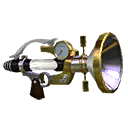 | Disperser | 7500 | 12 | DLC | 1 | Sprungboje | Heulboje | 15 | 55 | 75 | Klick |
 |
Junior-Kleckser | 0 | 1 | 1 | Klecks-Bombe | Kugelschild | 32 | 32 | 75 | Klick | |
 |
Junior-Kleckser Plus | 800 | 2 | Boss 1 besiegen | 1 | Sepitox-Bombe | Echolokator | 32 | 32 | 75 | Klick |
| 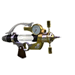 | Fein-Disperser | 3900 | 7 | DLC | 1 | Haftbombe | Bombenhagel | 32 | 25 | 75 | Klick |
 |
Fein-Disperser Neo | 6200 | 9 | DLC | 1 | Insta-Bombe | Tintzooka | 32 | 25 | 75 | Klick |
 |
Airbrush MG | 4500 | 7 | Boss 3 besiegen | 1 | Spürbombe | Tintzooka | 32 | 20 | 100 | Klick |
| 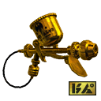 | Airbrush RG | 9300 | 13 | Boss 3 besiegen | 1 | Tintenmine | Tintferno | 32 | 20 | 100 | Klick |
 |
Kleckser | 500 | 2 | 1 | Insta-Bombe | Bombenhagel | 50 | 45 | 55 | Klick | |
 |
Tentatek-Kleckser | 2000 | 4 | 1 | Haftbombe | Tintzooka | 50 | 45 | 55 | Klick | |
 |
Heldenwaffe Replik | 1200 | 3 | Amiibo Mission | 1 | Insta-Bombe | Bombenhagel | 50 | 45 | 55 | Klick |
 |
Okto-Kleckser Replik | 0 | 40 | Miezrichter | 2 | Haftbombe | Tintzooka | 50 | 45 | 55 | Klick |
 |
.52 Gallon | 3000 | 5 | 1 | Tintenwall | Heulboje | 50 | 70 | 30 | Klick | |
 |
.52 Gallon Deko | 4500 | 11 | 1 | Spürbombe | Tintferno | 50 | 70 | 30 | Klick | |
 |
N-ZAP85 | 3500 | 5 | DLC | 1 | Klecks-Bombe | Echolokator | 50 | 32 | 75 | Klick |
| 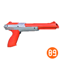 | N-ZAP89 | 4200 | 8 | DLC | 1 | Sprinkler | Tintferno | 50 | 32 | 75 | Klick |
| 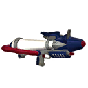 | Profi-Kleckser | 8000 | 10 | 1 | Klecks-Bombe | Tintferno | 68 | 55 | 40 | Klick | |
 |
Focus-Profi-Kleckser | 19800 | 20 | 1 | Detektor | Tintzooka | 68 | 55 | 40 | Klick | |
| 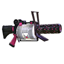 | .96 Gallon | 7600 | 12 | 1 | Sprinkler | Echolokator | 68 | 80 | 15 | Klick | |
| 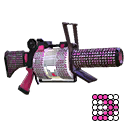 | .96 Gallon Deko | 9700 | 14 | DLC | 1 | Tintenwall | Tintentitan | 68 | 80 | 15 | Klick |
| 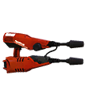 | Dual-Platscher | 9800 | 16 | 1 | Klecks-Bombe | Echolokator | 68 | 27 | 55 | Klick | |
 |
Dual-Platscher SE | 12800 | 18 | DLC | 1 | Sprungboje | Heulboje | 68 | 27 | 55 | Klick |
| 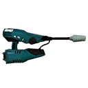 | Platscher | 4000 | 8 | 1 | Tintenwall | Tintferno | 80 | 32 | 40 | Klick | |
 |
Platscher SE | 7900 | 15 | 1 | Insta-Bombe | Tintentitan | 80 | 32 | 40 | Klick | |
 |
L3 Tintenwerfer | 5800 | 9 | DLC | 1 | Sepitox-Bombe | Heulboje | 60 | 40 | 65 | Klick |
| 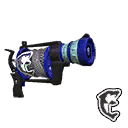 | L3 Tintenwerfer D | 6600 | 13 | DLC | 1 | Insta-Bombe | Tintentitan | 60 | 40 | 65 | Klick |
| 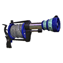 | S3 Tintenwerfer | 7500 | 10 | DLC | 1 | Haftbombe | Echolokator | 60 | 60 | 30 | Klick |
| Bild | Name | Preis | Level | Freischalten durch | Dabei seit Version | Sub-Waffe | Spezial | Reichweite | Explosion | Feuerrate | Details |
|---|---|---|---|---|---|---|---|---|---|---|---|
| 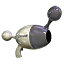 | Luna-Blaster | 7700 | 11 | DLC | 1 | Tintenmine | Tintzooka | 10 | 80 | 30 | Klick |
 |
Blaster | 3500 | 9 | 1 | Sepitox-Bombe | Heulboje | 25 | 70 | 20 | Klick | |
 |
Blaster SE | 10600 | 17 | 1 | Detektor | Kugelschild | 25 | 70 | 20 | Klick | |
| 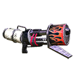 | Fern-Blaster | 8000 | 14 | DLC | 1 | Tintenwall | Tintferno | 35 | 60 | 10 | Klick |
| 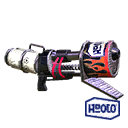 | Fern-Blaster SE | 10800 | 17 | DLC | 1 | Klecks-Bombe | Tintentitan | 35 | 60 | 10 | Klick |
| 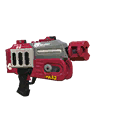 | Turbo-Blaster | 9600 | 14 | 1 | Tintenmine | Kugelschild | 45 | 35 | 40 | Klick | |
 |
Turbo-Blaster Deko | 14800 | 19 | 1 | Haftbombe | Bombenhagel | 45 | 35 | 40 | Klick | |
| 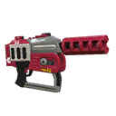 | Turbo-Blaster Plus | 11200 | 16 | DLC | 1 | Spürbombe | Tintzooka | 65 | 35 | 30 | Klick |
| Bild | Name | Preis | Level | Freischalten durch | Dabei seit Version | Sub-Waffe | Spezial | Reichweite | Aufladetempo | Beweglichkeit | Details |
|---|---|---|---|---|---|---|---|---|---|---|---|
| 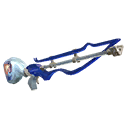 | Sepiator α | 5000 | 6 | 1 | Detektor | Kugelschild | 65 | 70 | 60 | Klick | |
 |
Sepiator β | 4500 | 11 | Boss 4 besiegen | 1 | Tintenmine | Tintzooka | 65 | 70 | 60 | Klick |
 |
Klecks-Konzentrator | 1000 | 3 | 1 | Klecks-Bombe | Bombenhagel | 85 | 50 | 40 | Klick | |
| 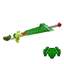 | Algen-Klecks-Konzentrator | 2500 | 4 | Boss 2 besiegen | 1 | Sprinkler | Heulboje | 85 | 50 | 40 | Klick |
| 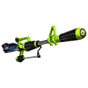 | Helden-Konzentrator Replik | 1200 | 3 | Amiibo Mission | 1 | Klecks-Bombe | Bombenhagel | 85 | 50 | 40 | Klick |
 |
Ziel-Konzentrator | 4200 | 13 | 1 | Klecks-Bombe | Bombenhagel | 88 | 50 | 35 | Klick | |
 |
Algen-Ziel-Konzentrator | 7800 | 17 | Boss 2 besiegen | 1 | Sprinkler | Heulboje | 88 | 50 | 35 | Klick |
 |
E-liter 3K | 12500 | 18 | 1 | Insta-Bombe | Echolokator | 97 | 20 | 15 | Klick | |
| 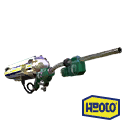 | E-liter 3K SE | 14200 | 19 | DLC | 1 | Sprungboje | Tintentitan | 97 | 20 | 15 | Klick |
 |
Ziel-E-liter 3K | 13400 | 19 | DLC | 1 | Insta-Bombe | Echolokator | 100 | 20 | 10 | Klick |
| 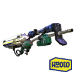 | Ziel-E-liter 3K SE | 22600 | 20 | DLC | 1 | Sprungboje | Tintentitan | 100 | 20 | 10 | Klick |
| 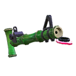 | Klotzer 14-A | 6200 | 15 | DLC | 1 | Tintenwall | Heulboje | 72 | 90 | 80 | Klick |
| Bild | Name | Preis | Level | Freischalten durch | Dabei seit Version | Sub-Waffe | Spezial | Reichweite | Färbetempo | Leichtheit | Details |
|---|---|---|---|---|---|---|---|---|---|---|---|
| 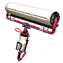 | Karbonroller | 6600 | 10 | DLC | 1 | Insta-Bombe | Tintzooka | 20 | 65 | 60 | Klick |
 |
Karbonroller Deko | 7600 | 13 | DLC | 1 | Spürbombe | Bombenhagel | 20 | 65 | 60 | Klick |
 |
Klecksroller | 1000 | 3 | 1 | Haftbombe | Heulboje | 55 | 50 | 40 | Klick | |
| 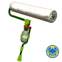 | Medusa-Klecksroller | 3000 | 7 | 1 | Sprungboje | Tintentitan | 55 | 50 | 40 | Klick | |
| 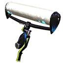 | Heldenroller Replik | 1200 | 3 | Amiibo Mission | 1 | Haftbombe | Heulboje | 55 | 50 | 40 | Klick |
 |
Dynaroller | 10000 | 15 | Boss 5 besiegen | 1 | Sprinkler | Echolokator | 72 | 30 | 20 | Klick |
| 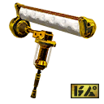 | Dynaroller Tesla | 25000 | 20 | Boss 5 besiegen | 1 | Klecks-Bombe | Tintferno | 72 | 30 | 20 | Klick |
 |
Quasto | 4800 | 8 | DLC | 1 | Sprinkler | Tintferno | 10 | 100 | 100 | Klick |
 |
Quasto Fresco | 5900 | 11 | DLC | 1 | Tintenmine | Kugelschild | 10 | 100 | 100 | Klick |
 |
Kalligraf | 8500 | 12 | DLC | 1 | Sprungboje | Tintentitan | 25 | 80 | 80 | Klick |